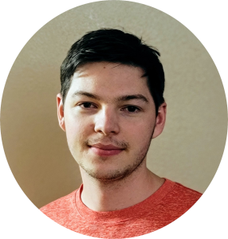

./About_Me My name is Vadym Kharchenko. I am originally from Ukraine. My family moved to the USA in 2014. I love the precision and certainty of Mathematics and the originality and expression of ART. I started learning Computer Science when I went to college. I then got my AA in Computer Science and transferred to a state university. I still find my field extremely interesting and addicting. I valued the most when I have to work on a problem for multiple hours and get my brains fried out; and I am lucky enough to have it still.

My main programming languages are:
C++ C Java
ASM As for my side hobbies: I'm into music, painting landscapes, politics, and I am an extreme fan of Steam and Netflix. ./Contact_Informatin Email: vadym.kharchenko@yahoo.com GitHub: github.com/omniknight0101
Discord: Happy_Robot#2612